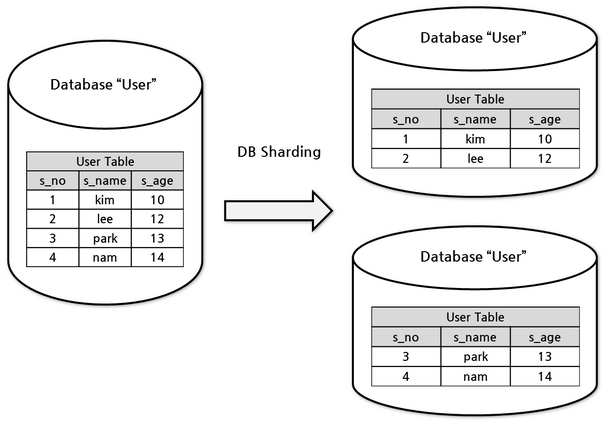
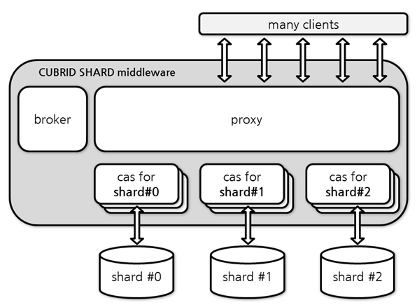
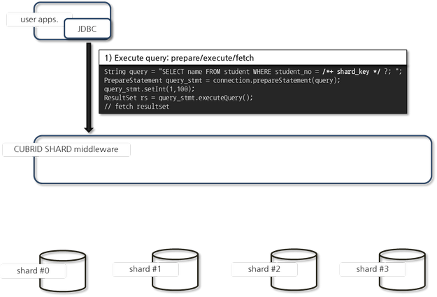
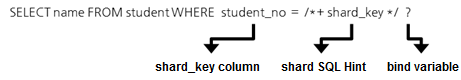
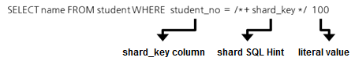
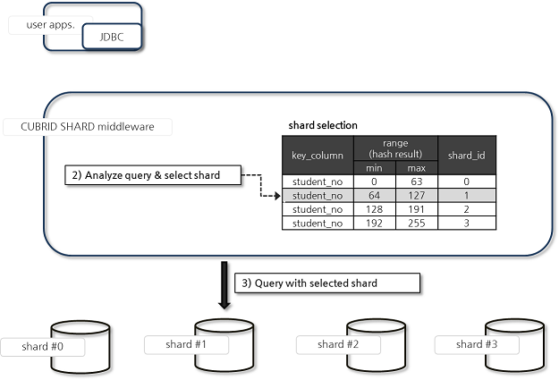
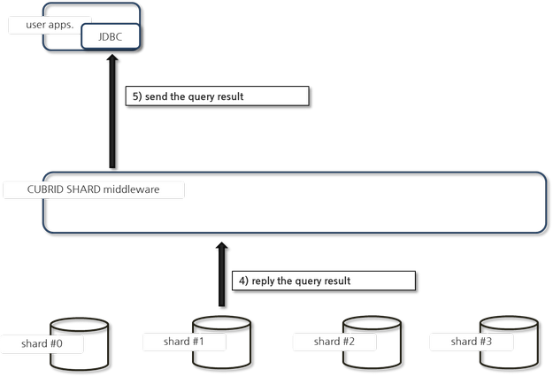
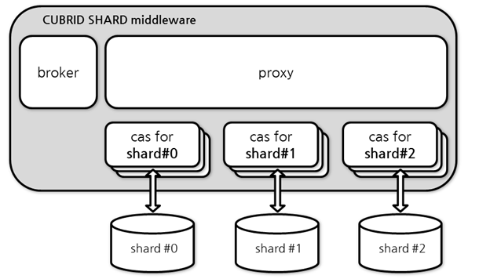

CUBRID SHARD
Database Sharding
Horizontal partitioning
Horizontal partition is a design to partition the data for which schema is identical, based on the row, into multiple tables and store them. For example, ‘User Table’ with identical schema can be divided into ‘User Table #0’ in which users less than 13 years are stored and ‘User Table #1’ in which users 13 or greater than 13 years old.

Database sharding
Database sharding is to store data into physically separate databases through horizontal partitioning and to retrieve them. For example, it is a method to store users less than 13 years old in database 0 and store users 13 or greater than 13 years old in database 1 when ‘User Table’ is located through multiple database. In addition to performance, database sharding is used to distribute and save large data which cannot be saved into one database instance.
Each partitioned database is called a shard or database shard.

CUBRID SHARD
The CUBRID SHARD is middleware for database sharding and its characteristics are as follows:
Middleware that is used to minimize changes in existing applications, allowing access to transparently sharded data by using Java Database Connectivity (JDBC), a popular choice, or CUBRID C Interface (CCI), which is CUBRID C API.
In this function, a hint may be added to an existing query to indicate a shard in which the query would be executed.
It guarantees the unique characteristics of certain transactions.
CUBRID SHARD Terminologies
The terminologies used to describe CUBRID SHARD are as follows:
shard DB : A database that includes a split table and data and processes user requests
shard metadata : Configuration information for the operation of a CUBRID SHARD. It analyzes the requested query and includes information to select a shard DB which will execute a query and to create a database session with the shard DB.
shard key (column) : A column used as an identifier to select a shard in the sharding table
shard key data : A shard key value that corresponds to the hint to identify the shard from the query
shard ID : An identifier to identify a shard DB
proxy : A CUBRID middleware process that analyzes hints included in user queries and sends requests to a shard DB which will process the query, based on the analyzed hint and the shard metadata
CUBRID SHARD Main Features
Middleware Structure
The CUBRID SHARD is middleware, positioned between an application and logically, or physically, split shards. It keeps connection with multiple applications, sends requests from applications to the appropriate shard, and returns the results to the applications.

Generally, it uses Java Database Connectivity (JDBC) or CUBRID C Interface (CCI), an interface used to connect to the CUBRID SHARD, and processes the requests from applications. It does not require additional driver or framework, minimizing the changes in applications.
The CUBRID SHARD middleware consists of three processes (broker/proxy/CAS) and the brief features of each process are as follows:

broker
Receives the initial connection request from drivers such as JDBC/CCI and then sends the received request to the proxy based on the load balancing policy.
Monitors and restores the status of the proxy process and the CAS process.
proxy
Sends the user request from the driver and then returns the processing result to the application.
Manages the connection between the driver and the CAS and processes transactions.
CAS
Creates a connection with the split shard DB and processes the user request received from the proxy by using the connection.
Processes transactions.
Selecting a Shard DB through the Shard SQL Hint
Shard SQL Hint
With the hints and configuration data included in a SQL hint statement, the CUBRID SHARD selects a shard DB that will process the requests from applications. The types of available SQL hints are as follows:
SQL hint |
Description |
|---|---|
/*+ shard_key */ |
A hint to specify the position of the bind variable or literal value that corresponds to the shard key column. |
/*+ shard_val( value ) */ |
A hint to explicitly specify the shard key within the hint when there is no column that corresponds to the shard key in the query. |
/*+ shard_id( shard_id ) */ |
A hint used when a user specifies a shard DB to process queries. |
The terms are summarized as shown below: For more information on shard terms, see CUBRID SHARD Terminologies.
shard key : A column to distinguish shard DBs. In general, this column exists in all or most tables in a shard DB and has a unique value.
shard id : An identifier that can be used to logically distinguish shards. For example, when one DB is split into four shard DBs, there are four shard IDs.
For more information on the query process using hints and configuration information, see General Procedure of Executing Queries by Using Shard SQL Hint.
Note
When more than one shard hint exist on a query, it works normally if shard hints indicate the same shards, but it fails if each of them indicates the different shard.
SELECT * FROM student WHERE shard_key = /*+ shard_key */ 250 OR shard_key = /*+ shard_key */ 22;On the above case, it works normally if the shard keys 250 and 22 indicate the same shard, but it fails if they indicate the different shards.
On some driver functions which batches the queries with an array by binding the several values(ex. PreparedStatement.executeBatch in JDBC, cci_execute_array in CCI), if at least the one which accesses to the other shard exists, all executions of the queries fail.
Functions to run several statements at one time on shard environment(ex. Statement.executeBatch in JDBC, cci_execute_batch in CCI) will be supported later.
shard_key Hint
The shard_key hint is to specify the position of a bind or literal variable. This hint should be positioned in front of either of them.
Ex) Specifies the position of a bind variable. Executes the query in the shard DB corresponding to the student_no value that would be bound when executed.
SELECT name FROM student WHERE student_no = /*+ shard_key */ ?;
Ex) Specifies the position of a literal value. Executes the query in the shard DB corresponding to the student_no value (the literal value) that is 123 when executed.
SELECT name FROM student WHERE student_no = /*+ shard_key */ 123;
shard_val Hint
The shard_val hint is used when there is no shard column that can be used to identify the shard DB in the query. It sets the shard key column as the value of the shard_val hint. The shard_val hint can be positioned anywhere in an SQL statement.
Ex) When the shard key is not included in the student_no or in the query, the query is performed in the shard DB in which the shard key (student_no) is 123.
SELECT age FROM student WHERE name =? /*+ shard_val(123) */;
shard_id Hint
Regardless of the shard key column value, the shard_id hint can be used when the user specifies a shard for query execution. The shard_id hint can be positioned anywhere in an SQL statement.
Ex) When the query is performed in shard DB #3, queries students whose value of age is greater than 17 in the shard DB #3.
SELECT * FROM student WHERE age > 17 /*+ shard_id(3) */;
General Procedure of Executing Queries by Using Shard SQL Hint
Executing Queries
The following shows how a user-requested query is executed.

An application makes a request for a query to the CUBRID SHARD through the JDBC interface. It adds the shard_key hint to the SQL statement to specify the shard DB from where the query will be executed.
The SQL hint, like the example above, in the SQL statement, should be positioned in front of the bind variable or literal value of the column specified by the shard key.
The shard SQL hint configured by the bind variable is as follows:

The shard SQL hint specified in the literal value is as follows:

Select a Shard DB to Analyze and Perform a Query
Select a shard DB to analyze and perform the query by following the steps below:

SQL queries received from users are rewritten in the format that is appropriate for internal processing.
Select the shard DB that executed the query by using the SQL statement and hint requested by the user.
When the SQL hint is set in the bind variable, select the shard DB which will execute the query by using the result of hashing the value of the shard_key bind variable and the configuration information.
The hash function can be specified by the user. If not specified, the shard_key value is hashed by using the default hash function. Default hash functions are as follows:
When the shard_key is an integer
Default hash function (shard_key) = shard_key mod SHARD_KEY_MODULAR parameter (default value 256)When the shard_key is a string
Default hash function (shard_key) = shard_key[0] mod SHARD_KEY_MODULAR parameter (default value 256)
Note
When the shard_key bind variable value is 100, “Default hash function (shard_key) = 100 % 256 = 100.” Therefore, the shard DB #1 (the hash result is 100) will be selected and then the user request will be sent to the selected shard DB #1.
Return the Query Execution Result
Return the query execution result as follows:

Receives the query execution result from the shard DB #1 and then returns it to the requested application.
Note
On the driver functions which do a batch query processing with the array which binds several values(ex. executeBatch in JDBC, cci_execute_array and cci_execute_batch in CCI ), they fail to run if there is a value which accesses to a different shard.
Transaction Support
Transaction Processing
The CUBRID SHARD executes an internal processing procedure to guarantee atomicity among ACID. For example, when an exception such as abnormal termination of an application occurs, the CUBRID SHARD sends a request to rollback to the shard DB which has been processing the request from the application in order to invalidate all changes in the transaction.
The ACID, the characteristic of general transactions, is guaranteed, based on the characteristics and settings of the backend DBMS.
Constraints
2 Phase Commit (2PC) is unavailable; therefore, an error occurs when a query is executed by using several shard DBs in a single transaction.
Quick Start
Configuration Example
The CUBRID SHARD to be explained consists of four CUBRID SHARD DBs as shown below. The application uses the JDBC interface to process user requests.

Start after creating the shard DB and user account
As shown in the example above, after each shard DB node creates a shard DB and a user account, it starts the instance of the database.
shard DB name: shard1
shard DB user account: shard
shard DB user password: shard123
sh> # Creating CUBRID SHARD DB
sh> cubrid createdb shard1 en_US
sh> # Creating CUBRID SHARD user account
sh> csql -S -u dba shard1 -c "create user shard password 'shard123'"
sh> # Starting CUBRID SHARD DB
sh> cubrid server start shard1
Changing the shard Configurations
cubrid_broker.conf
Change cubrid_broker.conf as shown below by referring to cubrid_broker.conf.shard:
Warning
The port number and the shared memory identifier should be appropriately changed to the value which has not been assigned by the system.
[broker]
MASTER_SHM_ID =30001
ADMIN_LOG_FILE =log/broker/cubrid_broker.log
[%shard1]
SERVICE =ON
BROKER_PORT =36000
MIN_NUM_APPL_SERVER =20
MAX_NUM_APPL_SERVER =40
APPL_SERVER_SHM_ID =36000
LOG_DIR =log/broker/sql_log
ERROR_LOG_DIR =log/broker/error_log
SQL_LOG =ON
TIME_TO_KILL =120
SESSION_TIMEOUT =300
KEEP_CONNECTION =ON
MAX_PREPARED_STMT_COUNT =1024
SHARD =ON
SHARD_DB_NAME =shard1
SHARD_DB_USER =shard
SHARD_DB_PASSWORD =shard123
SHARD_NUM_PROXY =1
SHARD_PROXY_LOG_DIR =log/broker/proxy_log
SHARD_PROXY_LOG =ERROR
SHARD_MAX_CLIENTS =256
SHARD_PROXY_SHM_ID =36090
SHARD_CONNECTION_FILE =shard_connection.txt
SHARD_KEY_FILE =shard_key.txt
For CUBRID, the server port number is not separately configured in the shard_connection.txt but the cubrid_port_id parameter of the cubrid.conf configuration file is used. Therefore, set the cubrid_port_id parameter of the cubrid.conf identical to the server.
# TCP port id for the CUBRID programs (used by all clients).
cubrid_port_id=41523
shard_key.txt
Set shard_key.txt, the shard DB mapping configuration file, for the shard key hash value as follows:
[%shard_key]: Sets the shard key section
Executing the query at shard #0 when the shard key hash result created by default hash function is between 0 and 63
Executing the query at shard #1 when the shard key hash result created by default hash function is between 64 and 127
Executing the query at shard #2 when the shard key hash result created by default hash function is between 128 and 191
Executing the query at the shard #3 when the shard key hash result created by default hash function is between 192 and 255
[%shard_key]
#min max shard_id
0 63 0
64 127 1
128 191 2
192 255 3
shard_connection.txt
Configure the shard_connection.txt file which is shard database configuration file, as follows:
Real database name and connection information of shard #0
Real database name and connection information of shard #1
Real database name and connection information of shard #2
Real database name and connection information of shard #3
# shard-id real-db-name connection-info
# * cubrid : hostname, hostname, ...
0 shard1 HostA
1 shard1 HostB
2 shard1 HostC
3 shard1 HostD
Starting Service and Monitoring
Starting CUBRID SHARD
To use CUBRID SHARD feature, start the CUBRID SHARD as shown below:
sh> cubrid broker start
@ cubrid broker start
++ cubrid broker start: success
Retrieving the CUBRID SHARD Status
Retrieve the CUBRID SHARD status as follows to check the parameter and the status of the process.
sh> cubrid broker status
@ cubrid broker status
% shard1
----------------------------------------------------------------
ID PID QPS LQS PSIZE STATUS
----------------------------------------------------------------
1-0-1 21272 0 0 53292 IDLE
1-1-1 21273 0 0 53292 IDLE
1-2-1 21274 0 0 53292 IDLE
1-3-1 21275 0 0 53292 IDLE
sh> cubrid broker status -f
@ cubrid broker status
% shard1
----------------------------------------------------------------------------------------------------------------------------------------------------------
ID PID QPS LQS PSIZE STATUS LAST ACCESS TIME DB HOST LAST CONNECT TIME SQL_LOG_MODE
----------------------------------------------------------------------------------------------------------------------------------------------------------
1-0-1 21272 0 0 53292 IDLE 2013/01/31 15:00:24 shard1@HostA HostA 2013/01/31 15:00:25 -
1-1-1 21273 0 0 53292 IDLE 2013/01/31 15:00:24 shard1@HostB HostB 2013/01/31 15:00:25 -
1-2-1 21274 0 0 53292 IDLE 2013/01/31 15:00:24 shard1@HostC HostC 2013/01/31 15:00:25 -
1-3-1 21275 0 0 53292 IDLE 2013/01/31 15:00:24 shard1@HostD HostD 2013/01/31 15:00:25 -
Writing a Sample
Check that the CUBRID SHARD operates normally by using a simple Java program.
Writing a Sample Table
Write a temporary table for the example in all shard DBs.
sh> csql -C -u shard -p 'shard123' shard1@localhost -c "create table student (s_no int, s_name varchar, s_age int, primary key(s_no))"
Writing Code
The following example program is to enter student information from 0 to 1023 to the shard DB. Check the cubrid_broker.conf modified in the previous procedure and then set the address/port information and the user information into the connection url.
import java.sql.DriverManager;
import java.sql.Connection;
import java.sql.SQLException;
import java.sql.Statement;
import java.sql.ResultSet;
import java.sql.ResultSetMetaData;
import java.sql.PreparedStatement;
import java.sql.Date;
import java.sql.*;
import cubrid.jdbc.driver.*;
public class TestInsert {
static {
try {
Class.forName("cubrid.jdbc.driver.CUBRIDDriver");
} catch (ClassNotFoundException e) {
throw new RuntimeException(e);
}
}
public static void DoTest(int thread_id) throws SQLException {
Connection connection = null;
try {
connection = DriverManager.getConnection("jdbc:cubrid:localhost:36000:shard1:::?charSet=utf8", "shard", "shard123");
connection.setAutoCommit(false);
for (int i=0; i < 1024; i++) {
String query = "INSERT INTO student VALUES (/*+ shard_key */ ?, ?, ?)";
PreparedStatement query_stmt = connection.prepareStatement(query);
String name="name_" + i;
query_stmt.setInt(1, i);
query_stmt.setString(2, name);
query_stmt.setInt(3, (i%64)+10);
query_stmt.executeUpdate();
System.out.print(".");
query_stmt.close();
connection.commit();
}
connection.close();
} catch(SQLException e) {
System.out.print("exception occurs : " + e.getErrorCode() + " - " + e.getMessage());
System.out.println();
connection.close();
}
}
/**
* @param args
*/
public static void main(String[] args) {
// TODO Auto-generated method stub
try {
DoTest(1);
} catch(Exception e){
e.printStackTrace();
}
}
}
Executing a Sample
Execute the sample program as follows:
sh> javac -cp ".:$CUBRID/jdbc/cubrid_jdbc.jar" *.java
sh> java -cp ".:$CUBRID/jdbc/cubrid_jdbc.jar" TestInsert
Checking the Result
Execute the query in each shard DB and check whether or not the partitioned information has been correctly entered.
shard #0
sh> csql -C -u shard -p 'shard123' shard1@localhost -c "select * from student order by s_no" s_no s_name s_age ================================================ 0 'name_0' 10 1 'name_1' 11 2 'name_2' 12 3 'name_3' 13 ...shard #1
sh> $ csql -C -u shard -p 'shard123' shard1@localhost -c "select * from student order by s_no" s_no s_name s_age ================================================ 64 'name_64' 10 65 'name_65' 11 66 'name_66' 12 67 'name_67' 13 ...shard #2
sh> $ csql -C -u shard -p 'shard123' shard1@localhost -c "select * from student order by s_no" s_no s_name s_age ================================================= 128 'name_128' 10 129 'name_129' 11 130 'name_130' 12 131 'name_131' 13 ...shard #3
sh> $ csql -C -u shard -p 'shard123' shard1@localhost -c "select * from student order by s_no" s_no s_name s_age ================================================ 192 'name_192' 10 193 'name_193' 11 194 'name_194' 12 195 'name_195' 13 ...
Architecture and Configuration
Architecture
The CUBRID SHARD is middleware, consisting of a broker, proxy, and CAS process as shown below.

Configuration
To use the CUBRID SHARD feature, the parameters needed to run SHARD related processes, shard connection file(SHARD_CONNECTION_FILE) and shard key file(SHARD_KEY_FILE) should be configured.
cubrid_broker.conf
The cubrid_broker.conf file is used for setting the CUBRID SHARD feature. Refer to cubrid_broker.conf.shard when configuring cubrid_broker.conf. For details of cubrid_broker.conf, see Broker Configuration.
Setting User-Defined Hash Function
To select a shard that will perform queries, the CUBRID SHARD uses the results of hashing the shard key and the metadata configuration information. For this, users can use the default hash function or define a hash function.
Default Hash Function
When the SHARD_KEY_LIBRARY_NAME and SHARD_KEY_FUNCTION_NAME parameters of cubrid_broker.conf are not set, the shard key is hashed by using the default hash function. The default hash function is as follows:
When the shard_key is an integer
Default hash function (shard_key) = shard_key mod SHARD_KEY_MODULAR parameter (default value: 256)When the shard_key is a string
Default hash function (shard_key) = shard_key[0] mod SHARD_KEY_MODULAR parameter (default value: 256)
Setting User-Defined Hash Function
The CUBRID SHARD can hash the shard key by using the user-defined hash function, in addition to the default hash function.
Implementing and Creating a Library
The user-defined hash function must be implemented as a .so library loadable at runtime. Its prototype is as shown below:
/* return value : success - shard key id(>0) fail - invalid argument(ERROR_ON_ARGUMENT), shard key id make fail(ERROR_ON_MAKE_SHARD_KEY) type : shard key value type val : shard key value */ typedef int (*FN_GET_SHARD_KEY) (const char *shard_key, T_SHARD_U_TYPE type, const void *val, int val_size);
The return value of the hash function should be within the range of the hash results of the shard_key.txt configuration file.
To build a library, the $CUBRID/include/shard_key.h file of the CUBRID source must be included. The file lets you know the details such as error code that can be returned.
Changing the cubrid_broker.conf Configuration File
To apply a user-defined hash function, the SHARD_KEY_LIBRARY_NAME and SHARD_KEY_FUNCTION_NAME parameters of cubrid_broker.conf should be set according to the implementation.
SHARD_KEY_LIBRARY_NAME : The (absolute) path of the user-defined hash library.
SHARD_KEY_FUNCTION_NAME : The name of the user-defined hash function.
Example
The following example shows how to use a user-defined hash. First, check the shard_key.txt configuration file.
[%student_no] #min max shard_id 0 31 0 32 63 1 64 95 2 96 127 3 128 159 0 160 191 1 192 223 2 224 255 3To set the user-defined hash function, implement a .so shared library that is loadable at runtime. The result of the hash function should be within the range of hash function results defined in the shard_key.txt configuration file. The following example shows a simple implementation.
When the shard_key is an integer
Select shard #0 when the shard_key is an odd number
Select shard #1 when the shard_key is an even number
When the shard_key is a string
Select shard #0 when the shard_key string starts with ‘a’ or ‘A’.
Select shard #1 when the shard_key string starts with ‘b’ or ‘B’.
Select shard #2 when the shard_key string starts with ‘c’ or ‘C’.
Select shard #3 when the shard_key string starts with ‘d’ or ‘D’.
// <shard_key_udf.c> #include <string.h> #include <stdio.h> #include <unistd.h> #include "shard_key.h" int fn_shard_key_udf (const char *shard_key, T_SHARD_U_TYPE type, const void *value, int value_len) { unsigned int ival; unsigned char c; if (value == NULL) { return ERROR_ON_ARGUMENT; } switch (type) { case SHARD_U_TYPE_INT: ival = (unsigned int) (*(unsigned int *) value); if (ival % 2) { return 32; // shard #1 } else { return 0; // shard #0 } break; case SHARD_U_TYPE_STRING: c = (unsigned char) (((unsigned char *) value)[0]); switch (c) { case 'a': case 'A': return 0; // shard #0 case 'b': case 'B': return 32; // shard #1 case 'c': case 'C': return 64; // shard #2 case 'd': case 'D': return 96; // shard #3 default: return ERROR_ON_ARGUMENT; } break; default: return ERROR_ON_ARGUMENT; } return ERROR_ON_MAKE_SHARD_KEY; }Build the user-defined function as a shared library. The following example is Makefile for building a hash function.
# Makefile CC = gcc LIBS = $(LIB_FLAG) CFLAGS = $(CFLAGS_COMMON) -fPIC -I$(CUBRID)/include -I$(CUBRID_SRC)/src/broker SHARD_CC = gcc -g -shared -Wl,-soname,shard_key_udf.so SHARD_KEY_UDF_OBJS = shard_key_udf.o all:$(SHARD_KEY_UDF_OBJS) $(SHARD_CC) $(CFLAGS) -o shard_key_udf.so $(SHARD_KEY_UDF_OBJS) $(LIBS) clean: -rm -f *.o core shard_key_udf.soTo include the user-defined hash function, modify the SHARD_KEY_LIBRARY_NAME and SHARD_KEY_FUNCTION_NAME parameters as shown in the above implementation.
[%student_no] SHARD_KEY_LIBRARY_NAME =$CUBRID/conf/shard_key_udf.so SHARD_KEY_FUNCTION_NAME =fn_shard_key_udfNote
When you define a user’s hash function in the application, 16bit(short), 32bit(int) and 64bit(INT64) integer can be used as the value of shard key.
The user should define a hash function when you have to use VARCHAR type.
Running and Monitoring
By using the CUBRID SHARD utility, CUBRID SHARD function can be started or stopped and various status information can be retrieved. For more details, see Broker.
Configuration Test
With cubrid broker test command, you can test if the configuration works normally. For details, see Broker to DB Connection Test.
CUBRID SHARD Log
There are four types of logs that relate to starting the shard: access, proxy, error and SQL logs. Changing the directory of each log is available through LOG_DIR, ERROR_LOG_DIR, and SHARD_PROXY_LOG_DIR parameters of the shard configuration file (cubrid_broker.conf).
Constraints
Linux only support
CUBRID SHARD feature can be used only in Linux.
One transaction can be run on only one shard DB
One transaction should be performed within only one shard DB, so the following constraints exist.
It is unavailable to change data in several shard DBs through changing the shard key (UPDATE). If necessary, use DELETE / INSERT.
A query about more than one shard DB, such as join, sub-query, or, union, group by, between, like, in, exist, or any/some/all, is not supported.
Session information is valid only in each shard DB
Session information is valid within each shard DB only. Therefore, the results from session-related functions such as LAST_INSERT_ID() may be different from the intended result.
No support SET NAMES statement
In SHARD environment, SET NAMES statement is not recommended to use because it can work abnormally.
auto increment is valid only in each shard DB
The auto increment attribute or SERIAL is valid within each shard DB only. So a result different from the intended result may be returned.
DDL syntax with SHARD hint syntax not supported
Since DDL phrases such as schema creation and change in the SHARD configuration environment do not support SHARD hints, each SHARD DB must be accessed to process schema creation and change. The shard_id (0) is normally processed, and an error is generated from the shard_id (1).
Error example)
CREATE TABLE foo (col1 INT NOT NULL) /*+ SHARD_ID(1) /
DROP TABLE IF EXISTS foo /+ SHARD_ID(1) */